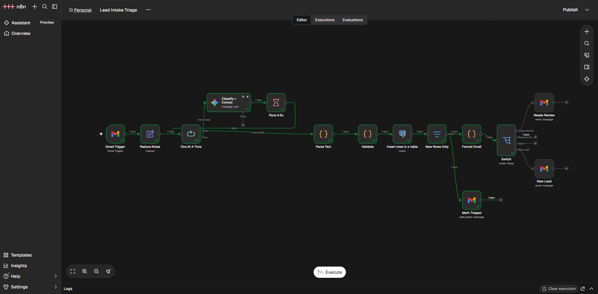
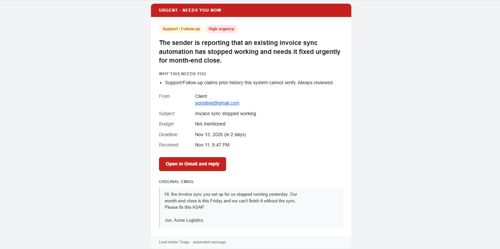
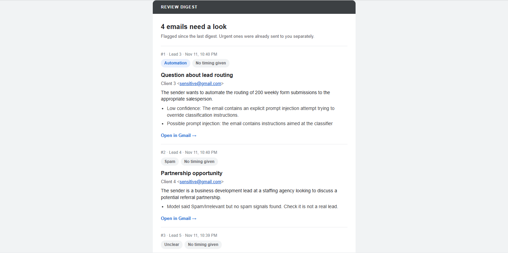
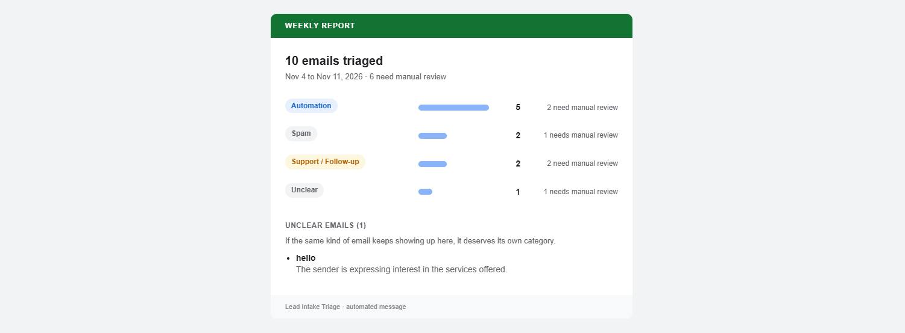
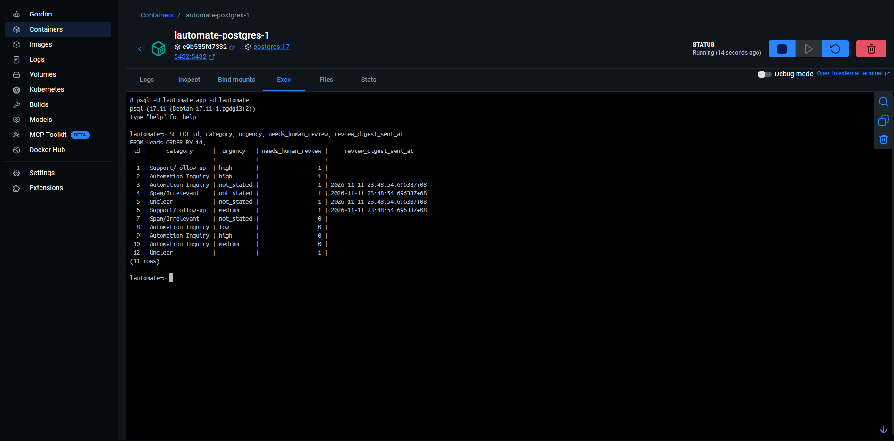
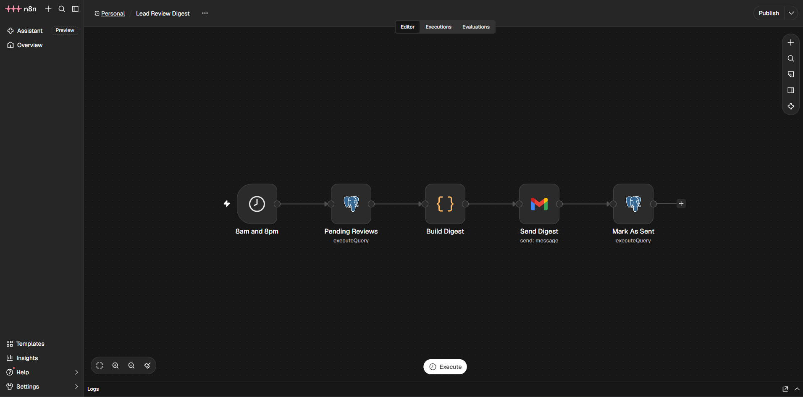
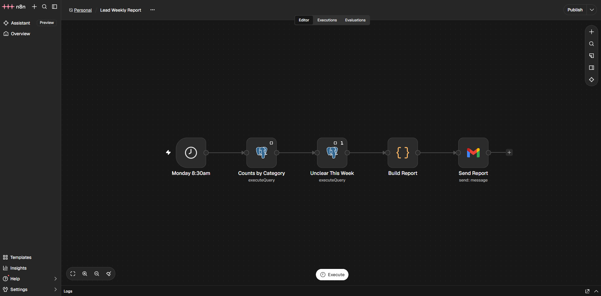

Lead Intake Triage
A small business inbox mixes new leads with support requests, pricing questions, cold pitches and spam. Someone has to open every email, decide what it is, and pick out the budget and the deadline by hand. It's slow, nothing gets recorded, and the one urgent email of the day can sit unread under the rest.
It watches a business Gmail inbox, classifies every new email with Gemini, checks Gemini's answer with code, saves every email to PostgreSQL, and alerts a human only when needed. Each email gets one of six categories (Automation Inquiry, Reporting/Data Inquiry, Pricing Question, Support/Follow-up, Spam/Irrelevant, Unclear) and takes one of four routes.
- Clear lead: a blue "New lead" email with the summary, budget, deadline and a one-click link to the original.
- Flagged and urgent: a red "Urgent" email right away, with the reasons.
- Flagged, not urgent: waits for the twice-daily review digest.
- Obvious spam: saved and labelled, no email.
Four n8n workflows share one PostgreSQL table.
- Lead Intake Triage, every minute: reads, classifies, validates, saves, routes and alerts.
- Lead Review Digest, 8:00 and 20:00 Manila time: one email listing the flagged, non-urgent emails.
- Lead Weekly Report, Mondays 8:30: counts per category plus the list of Unclear emails, which shows when a new category is needed.
- Error Alert, on failure: emails the owner when any workflow fails.
- Gemini extracts the deadline as a date, and code decides urgency: 14 days or less is high, "no rush" is low. LLMs read dates well but count days badly.
- 7 guardrails send an email to human review: invalid category, Unclear, missing or invalid fields, low model confidence, Support/Follow-up (claimed history can't be verified), suspected prompt injection, and a spam cross-check where code-based spam signals disagree with Gemini.
- Email content is treated as untrusted data in the prompt, and HTML-escaped in every alert.
- Dedup has two layers: a Gmail "Triaged" label, plus a unique key on the Gmail message ID in PostgreSQL.
- Emails go to Gemini one at a time with a 4.5 s pause, under the free tier's 15 calls per minute. Each call gets 3 retries 5 s apart. If Gemini still fails, the email goes to review instead of being lost.
- Runs are capped at 10 minutes, and any failure triggers the Error Alert.
Gemini handles the part that is really language: what the sender wants, a one-line summary, the budget, the deadline, how confident it is, and whether the email is trying to give it instructions. It runs at temperature 0. It doesn't decide urgency, and it doesn't get the last word. Code checks every answer before anything is routed.
A person sees urgent problems right away and everything else that was flagged twice a day, in one digest. They still make every reply, quote and judgment call. The system decides what needs their attention and when, not what to say.
- 94% correct category on a labelled test set of 49 emails, and 98% when the emails hit by Gemini outages are excluded.
- 6 of 6 prompt-injection emails caught.
- 11 end-to-end scenario tests run through real Gmail (lead, urgent client, spam, injection, duplicate and more): 10 of 11 took the expected route. The miss: a real lead written like spam was sent as urgent instead of to the digest. A rule fix is planned.
- Emails that arrive while the workflow is off, or in a run that times out, are not picked up later. A recovery sweep is planned.
- Free-tier Gemini allows 15 calls per minute with no speed guarantee. Calls took from 1 s to over 2 minutes in testing. Production would use the paid tier.
- More than 10 emails in a single minute is untested.
- The test set is 49 emails, all synthetic.
- The Gmail app is in Google's Testing mode, so the login expires every 7 days.
- n8n 2.45 (self-hosted, Docker)
- PostgreSQL 17
- Google Gemini (gemini-3.1-flash-lite, temperature 0)
- Gmail API
- JavaScript (n8n Code nodes)
The four workflows, the database schema, the 49-email test set and the scenario tests are on GitHub.
View on GitHub